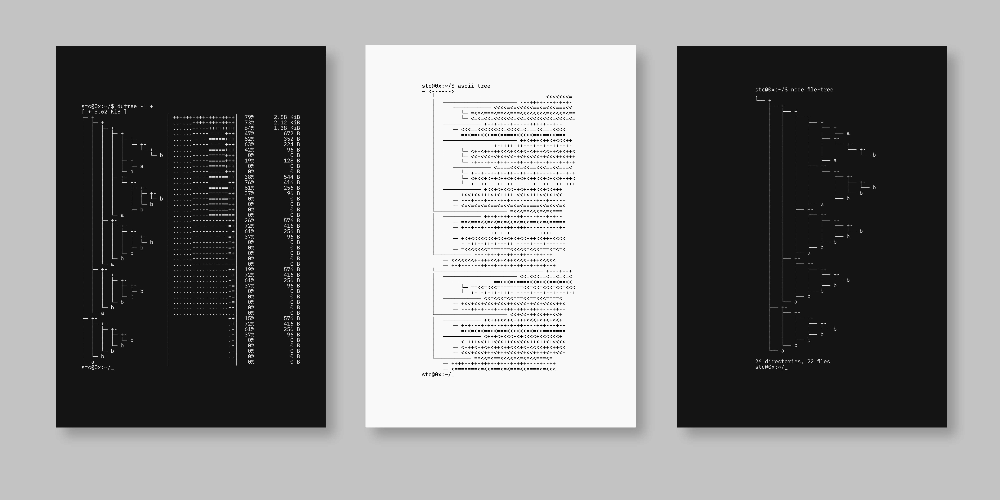

Algorithmic plotter artworks, created with a command-line interface

Terminal Drawings are a collection of machine drawn images that involve text based simulations to represent associative space. As the computer terminal is a low-level ontological tool for interfacing the real world with computational landscapes, these series resemble the performative mechanics of such gateways.
Given that digital information doesn't inherently exist in physical space, we can use any structure to illustrate relationships between files, folders, thoughts and other conceptual entities.
Artificial memory architectures often grapple with the dichotomy between associative and spatial memory paradigms. While spatial memory frameworks prioritize the organization of information in physical or abstract spatial arrangements, reflecting the human brain's propensity for spatial cognition, associative memory models prioritize the interconnectedness of information, emphasizing the strength of relationships between data points.
Although the drawings are based on text-based characters and operator symbols from low-level computer code, their structures escape verbal determinations and function as an absorption surface for conventional formulae. Without relying on language, form becomes the defining element— a gesture that shapes hybrid ontologies of existential space.
The Collection

All pieces are created with custom code, executed in a command-line interface and available as unique editions of hand signed physical plotter drawings + corresponding NFTs on Ethereum (Base). The NFT (Certificate of Authenticity) acts as provenance for the physical piece shipped, any secondary sale of a work must include the physical.
Available layouts
- Black ink on light grey (perla) Tiziano (160g/m2) paper
- Silver ink on black photo cardboard (230g/m2)
Size: 210 x 297 mm (A4)
Explore the complete series on the blockchain on OpenSea. The collection is currently available for private sale only. If you're interested in a specific piece, write a DM on X (Twitter), Farcaster or Instagram.
© Agoston Nagy 2024